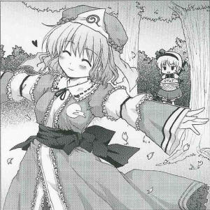
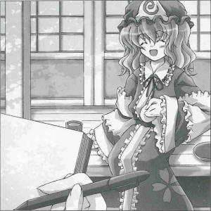

Mysterious Flower Petals Beneath the Cherry Trees
Is this the work of a new religious organization?I heard reports from the inhabitants of Gensokyo that around 4 P.M. on Xth the X, a great number of cherry petals lay scattered beneath the cherry trees, which had not yet begun to blossom.
As petals that have not blossomed cannot fall, I decided to investigate the matter further. As a result, I was able to establish that the petals were from a type of cherry tree that doesn't grow in Gensokyo.
Finding this unusual, I decided to keep watch under the cherry trees, and after three days I met somebody who seemed a likely suspect.
That suspect was the mistress of the Netherworld, Yuyuko Saigyouji (ghost).
When I found her, she was walking together with a servant who was carrying a large basket filled with flower petals, which I pointed out as implicating them in the current incident. The suspect responded thus:
You wish to know what we are doing? As you can see, we're returning Gensokyo its spring. When we scatter these petals around, these cherry petals should bloom right before your eyes.
Then, when I asked her if there was something special about those cherry blossoms, she replied, Of course, they're very special. If we spread them around, spring will come to Gensokyo. Saying this, she reached into her servant's basket, took some cherry blossoms, and threw them into the air.
The blossoms on the cherry trees hadn't opened yet, but the petals slowly fluttered to the ground as if spring had visited that spot, and the suspect spun about dancing among the falling cherry blossom petals.
It was extremely hard to understand, but the flower petals she was scattering about appeared to be natural flower petals, so it's likely there was no inherent danger in this incident.
Spring's coming this year has been late compared to previous years, and the cherry blossoms haven't opened yet, leaving all of Gensokyo's inhabitants impatient.
Perhaps this sprightly ghost was impatient for the arrival of spring, and thought that she could at least enjoy a fabricated spring in that way.
However, it is still a mystery how she obtained natural cherry blossoms, where they were from, and what sort of cherry tree produced them.
Yuyuko
Oh my, the ghost in this article looks so elegant.
Aya
Please don't talk about yourself like that.
Yuyuko
Oh, this is about me? I was just returning spring. The cherry blossoms opened soon after this, didn't they?
Aya
When you say returning... it makes it sound like you borrowed it.
Yuyuko
I was borrowing it, from that shrine maiden.
Aya
The shrine maiden? What did she have to do with this? Hm, that could make for another article...
Yuyuko
If you're interested, why not interview me? You can interrogate me to your heart's desire.
Aya
No, thank you.
Yuyuko
But, isn't the freshness of the news important for newspaper articles? This is too old.
Aya
Even if they're old, interesting things are still interesting. If no one reports on them, no one may ever realize the truth.
Yuyuko
But you might let something new and interesting get away.
Aya
It's important to learn from the past. You can learn new things by examining the old.
Yuyuko
Who are you calling old?
Aya
I wasn't talking about you.
Yuyuko
How rude! I'm still a pert young soul!
Aya
Getting back to the matter at hand... why were you scattering about those cherry blossoms? I'd like to know the truth.
Yuyuko
Yes, I agree that the truth is the most interesting thing. And as everyone is interested in different things... you could say the truth varies, too. For example, these two buns...
Aya
Look, now, no changing the subject. I'm asking you about the truth behind this matter.
Yuyuko
My, you're so impatient. What happened last year is ancient history; I've already forgotten all about it.
Aya
Weren't you just about to tell me something?
Yuyuko
Do you know the story of Old Man Hanasaka, who made an old, dead tree flower by scattering magical ash on it?
Aya
Old Man Hanasaka?
Yuyuko
How rude. I'm not that old.
Aya
No, we weren't talking about you.
Yuyuko
What I was scattering about were magical flower petals full of love and affection.
Aya
But that wasn't ash?
Yuyuko
Maybe it was?
Aya
Don't tell me you were trying to make the cherry trees flower by scattering cherry blossoms around?
Yuyuko
I was returning the spring I borrowed from the shrine maiden, with interest. Isn't that what you're supposed to do when you borrow things?
Aya
...In any case, from where did you get those cherry blossoms? There weren't any cherry trees in blossom at the time.
Yuyuko
Well, Gensokyo's cherry trees blossomed after that, didn't they? The cherry blossoms were just what I'd borrowed. So, I had to return them, of course. By the way, are you going to eat that bun?
Aya
Honestly! This doesn't look like it'll make a good article. Please speak so people can understand you from now on!
Profile:
Yuyuko Saigyouji
As princess of the dead, she has the power to control death.
She had her gardener, Youmu, gather Gensokyo's spring in order to try to lift the seal on the youkai cherry tree, the Saigyou Ayakashi.
She has a very simple and straightforward personality.
Appearances:
Perfect Cherry Blossom, Immaterial and Missing Power, Imperishable Night, Phantasmagoria of Flower View